충남대학교 컴퓨터공학과 김상하 교수님의 "컴퓨터 네트워크" 강의를 필기한 내용입니다.
다소 잘못된 내용과 구어적 표현 이 포함되어 있을 수 있습니다.
Congestion Control
- 일단 회선상의 문제는 Data Link Layer에서 다 잡기도 하고 요즘은 광케이블을 쓰기 때문에 거의 없다
- 따라서 에러가 나면(ACK가 오지 않으면) 무조건 Queue Overflow에 의한 것이라고 생각
- 이때 Receiver 쪽에서 나는 Queue Overflow는 Flow Control을 이용해 잡게 되고 중간 Router 쪽에서 나는 Queue Overflow는 Congestion Constol을 이용해 잡게 됨
Phases of Congestion Control
- 각각의 단계를 알기 전에 일단 MSS(Maximum Segment Size) 를 알아야 한다
- 걍 간단하게 말해서 한번에 보낼 수 있는 Segment의 최대 크기를 말하는거임
- 뭐 MTU같은거지
- 그리고 cwnd라는게 나오는데 그냥 Congestion Window의 약자이다 - Congestion이 일어나지 않고 한번에 받을 수 있을 것이라고 생각하는 버퍼의 크기
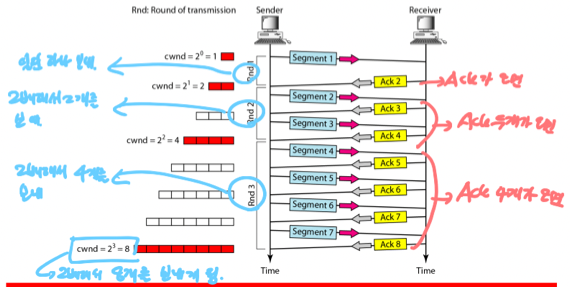
1. Slow Start Phase
- 처음에는 cwnd를 1MSS로 해서 보내보고 송신에 성공하면 2배를 하여 cwnd를 2MSS로 하여 보내는 것을 반복하여 성공할때마다 cwnd의 크기를 2배씩 하여 보내게 된다
- 물론 영원히 이렇게 보내는건 아니고 ssthresh(Slow Start Threshold) 라는 값에 도달할때까지 2배씩 증가함 - 보통 이 값은 65535byte로 지정되어 있다
- 단위가 MSS랑 byte여서 헷갈리는데 그냥 뭐 저정도까지 올라가면 2배씩 무지성으로 올리지는 않는구나 라고 생각하면 됨
- 뭐 이런식의 무지성 2배를 Exponential Increase라고 부른다 - 2배씩 지수적으로 늘어나기 때문
- ssthresh에 도달하면 다음 단계인 Avoid Congestion Phase로 넘어감
2. Congestion Avoidance Phase
- SS에서 두배씩 무지성으로 올리다가 ssthresh에 도달하면 이때부터는 2배씩 올리는게 아니라 1MSS씩 증가하여 전송하게 된다 - 만일 64MSS를 보냈는데 성공하고 ssthresh에 도달했다면 그 다음에는 65MSS를 보내게 되는 것
- 이번에는 1MSS씩 조심스럽게 cwnd를 늘리면서 보내보는 셈
- cwnd가 1씩 늘어나기 때문에 Additive Increase라고 부른다
3. Congestion Detection Phase
-
혼잡이 일어난 경우에 어떻게 대처하는가
- 혼잡이 일어난 경우에는 ssthresh의 크기를 cwnd 크기의 절반으로 줄이고 시작한다 - 이렇게 절반으로 만드는 것을 Multiplicative Decrease라고 부름
- 이전의 ssthresh크기에서 절반하는거 아니다 - 마지막 cwnd의 크기를 절반해서 새로운 ssthresh의 값으로 설정하는 것
- 그 다음에는 상황에 따라 대처방법이 다르다
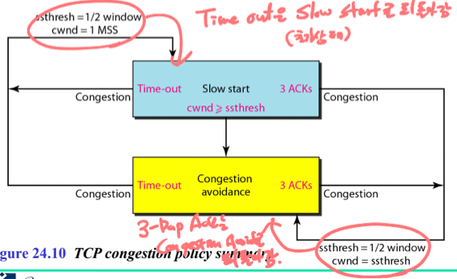
-
먼저 Time out, 즉, ACK가 오지 않은 경우 에는 무조건 혼잡한 경우이므로 cwnd를 1로 설정하고 2배씩 늘려나가는 Slow Start Phase로 되돌아가게 된다
-
그리고 3-Duplicate ACKs 즉, 동일한 ACK가 3번 연달아 온 경우 에는 Weak Error라고 판단하기 때문에(전시간에 배웠쥬?) Slow Start로 돌아가는게 아닌 이전의 cwnd의 절반으로 줄어들은 ssthresh의 크기로 cwnd를 설정하고 Congestion Avoidance Phase로 돌아가게 된다
- 여기서 뭐가 절반으로 줄어드는지 헷갈리지 마셈
- ssthresh의 크기가 절반으로 줄어들고 cwnd의 크기는 1이 되거나 ssthresh와 같은 크기가 된다
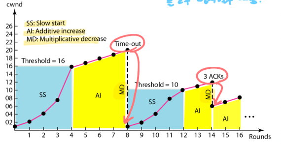
- 그래서 진행 과정 예시를 보면 위와 같다
- SS(Slow Start)로 시작을 해서
- ssthresh에 도달하면 AI(Additive Increase)로 갔다가
- 타임아웃이 나면 MD(Multiplicative Decrease)가 걸리고 다시 SS부터 시작을 했다가
- 3ACK가 걸리면 또다시 MD가 걸리고 AI부터 다시 시작하는 형태
SCTP(Stream Control Trasmission Protocol)
- 주요 특징들은 다음과 같음
- Reliable : Error Detection및 Flow / Congestion Control을 지원한다
- Connection Oriented : SCTP에서는 Association이라는 용어를 사용하긴하는데 어쨋든 순서가 보장되는 통신을 지원한다
- Message Oriented : TCP처럼 메세지들 한대 묶어서 전송하고 그러지 않고 Message의 Boundary를 잘 지켜서 보낸다
- 뭐 너무 크면 Fragmentation 을 하긴 한다드라
- 뭐 가장 최근에 소개됐댄다
- 비디오나 오디오같은 멀티미디어를 전송하기에 TCP에서 부족한 부분을 보완한 프로토콜이고
- TCP와 UDP의 장점만 취한 프로토콜이랜다
- 양방향 통신을 지원함 - Full Duplex Communication을 지원한다
- 따라서 Piggybacking도 지원하더라
Process to Process Communication
- UDP, TCP에서 사용하는 Well-known port number를 그대로 사용하고
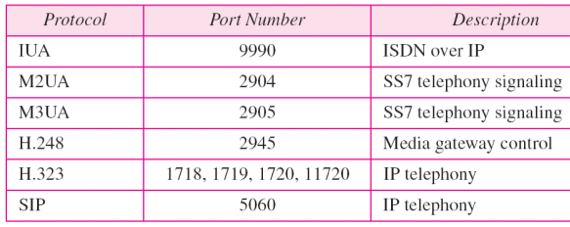
- 추가적으로 이런 Port number도 지원하는데 걍 참고만 하셈
Multi-streaming, Multi-homing
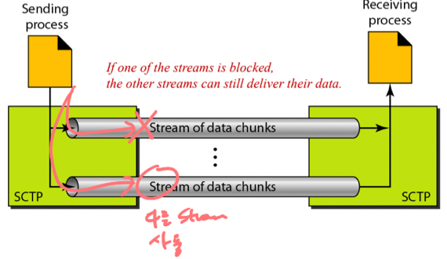
- 일단 Multiple Streaming은
- TCP에서는 하나의 Stream만 사용해서 전송을 했는데
- Single Stream으로는 보내다가 중간에 유실되면 나머지 데이터들까지 다 블락먹게 되는 문제점이 있다더라
- 이게 텍스트파일 전송에는 문제가 없을지 몰라도 오디오나 비디오를 전송할때는 문제가 된댄다
- 따라서 SCTP에서는 이러한 Stream을 여러개 지원하는 Multiple Streaming을 이용한댄다
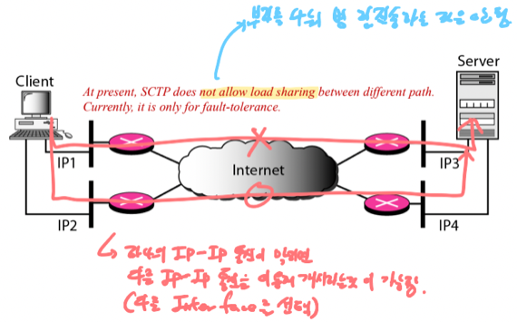
- 그리고 Multiple Homing은
- TCP의 경우에는 하나의 IP-IP쌍끼리 통신하는 경우였다면
- SCTP의 경우에는 여러개의 IP-IP이 통신하는 것을 지원한다
- 이것도 약간 Multiple Streaming과 연관이 있는데
- 우선 Primary IP-IP address 로 통신하다가 걔가 막혀버리면 송수신의 다른 Network Interface를 선택하여 통신을 이어가는 방식이다
- 위 그림 보면 됨
- 당연히 양쪽의 Host에 Network Interface가 여러개 설치되어있는 경우 가능함
- 하지만 두개의 채널을 동시에 이용해 병렬로 보내는 것은 지원하지 않는다
- 이렇게 말하면 이 두개가 뭔차이야 라고 생각할 수 있는데 아래 그림 보면 알 수 있다
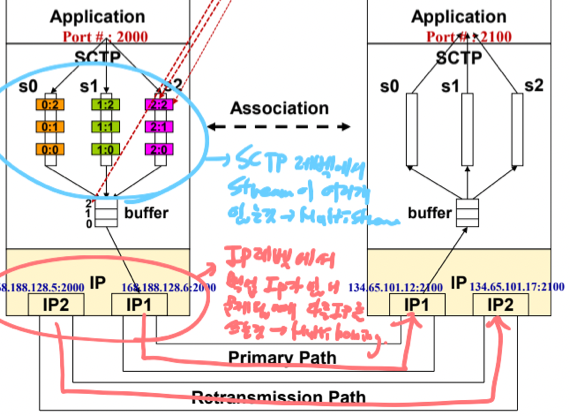
- 봐봐라
- 일단 Application Layer에서 아래 내려보낼 수 있는 Stream이 여러개 있는 것이 Multiple Streaming이다
- 따라서 각각의 Stream들은 한번에 하나만 이용할 수 있는게 아니라는 것도 Multiple Homing과의 차이점이라고 할 수 있겠네
- 그리고 이 각각의 Stream들은 하나의 버퍼에 Multiplexing되고
- 버퍼에 있는것들이 Primary Path를 타고 이동하다가 이게 막히면 차선책인 Retransmission Path를 타게 되고 이것을 Multiple Homing이라고 하는 것이다
- 즉, 어디서 어디로 내려보내냐의 차이가 가장 크다고 할 수 있음
TSN, SI, SSN
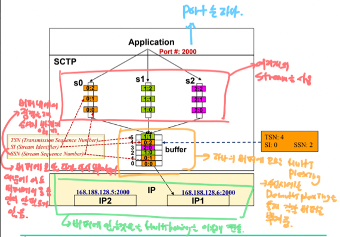
- 일단 SCTP에서도 당연히 Endpoint인 Port number는 송수신 양쪽에 한개씩이다
- TSN(Transmission Sequence Number) 는 Multiplex Buffer의 각각의 Chunk에 붙는 번호이다
- SCTP에서 하나의 Message를 Chunk라고 부른다고 생각하면 된다
- 얘를 이용해서 ACK를 주고받고 정렬을 하는 등의 과정을 거친다
- 그리고 수신측에서 Multiplex된 애들을 다시 Demultiplex해서 버퍼로 올려보내주기 위해서는 얘가 어느 버퍼에서 왔는지 기록해놔야 하는데 이게 SI(Stream Identifier) 이다
- 또한 버퍼에 들어와서도 정렬을 해야 하기 때문에 이때 한 버퍼 내에서의 순서를 나타내는 숫자가 SSN(Stream Sequence Number) 이다
Packet Structure
- TCP에서는 전송단위가 Segment였던 반면 SCTP에서는 전송단위를 Packet이라고 부른다
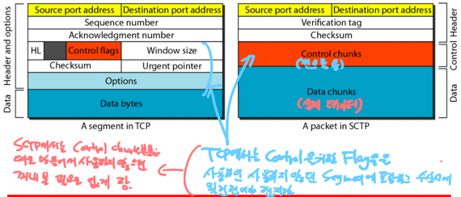
- SCTP에서는 Header에는 반드시 모든 Packet에 있어야 하는것만 남기고 나머지 것들은 전부 Control Chunk로 뺐다
- 즉, TCP에서의 Control Flag와 이와 관련된 것들은 필요할때 Control Chunk로 넣게 함으로 패킷 구조를 꺼내볼때 불필요한것까지 꺼내볼 필요가 없게 함
- 따라서 SCTP의 Header는 12byte로 고정이고 따라서 hlen같은 필드도 필요없어졌더라
- ACK나 rwnd, cwnd같은 것들 전부 다 Control Chunk에 들어가게 됨
- Urgent는 그냥 삭제되었댄다 - 이유는 안알려줌
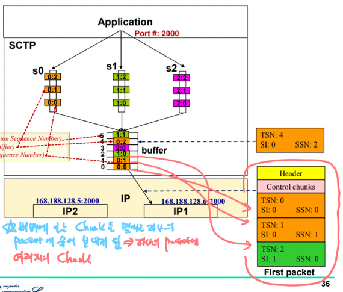
- 그리고 TCP에서는 byte단위로 송수신하기 때문에 Data Byte를 그냥 하나의 덩어리로 취급하지만 SCTP에서는 Message Chunk단위로 송수신하기 때문에 여러개의 Stream에서 내려온 여러개의 Chunk를 Packet의 Data Chunk에 넣어서 송수신하게 된다
- 위 그림은 하나의 Packet에 Stream 0, 1에서 내려온 세개의 Chunk가 담기는 것을 보여주는 예시임
- 그리고 Data Chunk들에게만 TSN이 존재한다는 것 꼭 알아둬야 한다
- 따라서 TCP에서는 단순 Control을 위한 Segment에도 Sequence number가 할당되었지만
- SCTP에서는 Control Chunk에는 TSN이 붙지 않기 때문에 Sequence number를 소비하지 않게 된다
- 또한 TCP에는 Segment당 하나의 Sequence Number가 붙었지만 SCTP에서는 Chunk별로 TSN, SI, SSN이 붙기 때문에 Packet내의 각 Data Chunk마다 Sequence number가 달리는거라고 볼 수 있다
- TSN이 Data Chunk에만 붙기 때문에 ACK는 Data Chunk에 대해서만 Acknowlegement를 하기 위한 것이 되고
- ACK와 Error Control 등은 전부 Stream으로 올라가기 전 Buffer에서 이루어지므로 TSN만 사용하고 SI, SSN은 사용하지 않는다
- Verification tag는 SCTP로 통신할때 맺은 Association들을 구분하기 위한 필드라는것 정도만 알고 있으면 될듯
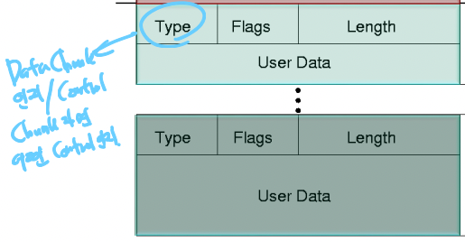
- 하나의 Chunk는 위처럼 구성된다
- Type에 Data Chunk인지, 아니면 어떤 Control Chunk인지의 정보가 들어감
- 뭐 나머지는 별로 중요하지 않다
Association
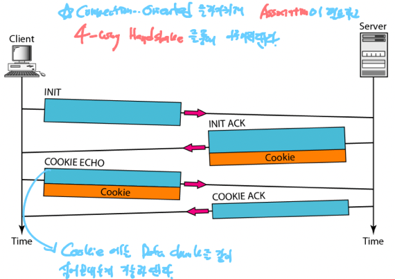
- TCP와는 다르게 SCTP에서는 4-way handshake를 이용해서 Association을 맺는다
- 여기서 알아야 할 것은 Cookie단계에서도 Data chunk를 같이 실어 보낼 수 있다는 것과
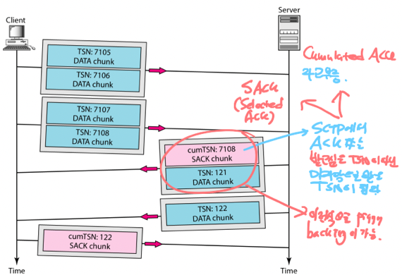
- 위처럼 Piggybacking을 지원한다는 것
- 그리고 ACK는 Selective ACK(SACK) 를 보내게 되는데 이때는 전과는 다르게 자신이 받고싶은 것이 아니라 마지막으로 받은 TSN을 써서 보내게 된다는 것 기억해라
- 마지막으로 Terminating Association을 할때는 Half-close가 안된다 - 한쪽이 끝내고 나머지 한쪽이 다 정리될때까지 기다리는 방식이 아닌 끝나면 그냥 둘 다 끝나버림
Flow, Error, Congestion Contol
- 용어정리가 좀 필요하다
- 송신측
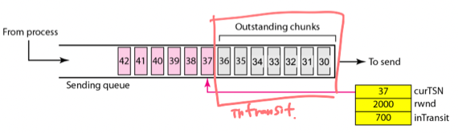
- curTSN : 다음으로 보낼 Chunk의 TSN
- rwnd : 수신자가 보내준 수신버퍼 가용크기
- inTransit : 송신자가 보냈지만 아직 ACK를 받지 못한 데이터의 양
- 송신측에서는 rwnd - inTransit의 값이 curTSN의 Chunk size보다 클때 해당 Chunk를 보내게 된다
- 이 값이 curTSN의 Chunk size보다 작다면 수신자에게 공간이 없다는 것을 나타내기 때문
- rwnd가 아닌 여기에서 inTransit을 뺀 값이 기준이 되는 이유는 아직 수신자가 rwnd값을 알려주지 않았어도 내가 보낸것을 기준으로 추정할 수 있기 때문이다
- 수신측
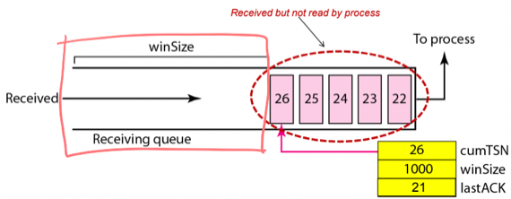
- cumTSN : 마지막으로 정상적으로 받은 Chunk의 TSN
- 만일 정상적이지 않은 - 순서가 제대로 지켜지지 않은 - Chunk가 들어오면 걔는 cumTSN에 반영되지 않고 앞순번의 Chunk가 다 들어오면 그때서야 반영된다
- winSize : 가용 수신버퍼 크기
- winSize는 다음과 같이 계산된다 - 처음 크기는 뭐 알아서 설정될거고 만약 Chunk가 들어오면 그 크기만큼 winSize가 줄어들고 위 버퍼 혹은 프로세스에서 가져가면 그만큼 커지는 것
- 이때는 정상적이지 않은 Chunk - 즉, 순서가 제대로 지켜지지 않은 Chunk의 크기까지 뺌 - 순서가 지켜지지 않아도 버퍼에 넣어놓고 앞순번의 Chunk가 올때까지 기다린다
- lastACK : 마지막으로 보낸 ACK
- 뭐 당연한 얘기긴 한데 lactACK의 값이 cumTSN과 같으면 ACK보낼게 없다는 얘기니까 안보내고 작을 경우에만 cumTSN값을 SACK로 보내게 된다
- 따라서 Flow Control 예시를 따라가보면
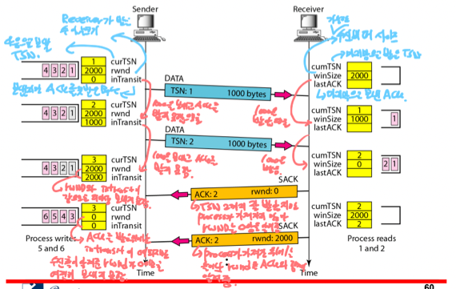
- 우선 rwnd - inTransit값이 2000이고 curTSN의 Chunk size가 1000이므로 TSN 1을 보냄
- 보내고 난 뒤에는 curTSN이 2가 되고 inTransit은 TSN 1에 대한 ACK를 받지 못했으므로 1000이 된다
- 수신자는 TSN 1을 받아들고 cumTSN은 1, winSize는 1000을 줄여 1000으로 설정해놓는다
- 그리고 여전히 rwnd - inTransit의 값이 1000이고 curTSN의 Chunk size가 1000이므로 TSN 2를 보내게 된다
- 마찬가지고 송신자는 curTSN이 3이 되고 inTransit은 2000이 되며 수신자는 cumTSN이 2, winSize는 0이 된다
- 이때 송신자는 rwnd - inTransit의 값이 0이므로 더이상 보내지 못하고 기다리는 상태가 되고
- 수신자는 TSN 2까지 잘 받았다는 것을 ACK로 알려주고 rwnd가 0이라는 것도 송신자에게 알려준다
- 그럼 송신자는 ACK를 받았으므로 inTransit을 0으로 해주고 rwnd도 0으로 해준다
- 마지막으로 프로세스가 Chunk를 가져가면 그때 ACK2와 함께 rwnd 2000을 보내서 수신버퍼가 비었음을 알려준다
- 그 다음에는 Error Control 예시를 하나 보면
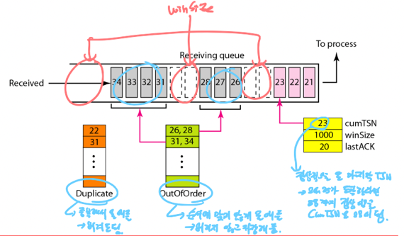
- 수신측인데
- 순서가 맞지 않는 애들을 버리지 않고 구멍난 상태로 버퍼에 넣어놓되 OutOfOrder에 기록해둔다
- 뭐 중복해서 들어온애들은 Duplicate 에 적어놓고
- 위에서도 말했지만 Winsize는 정상적인애들 뿐만 아니라 순서가 맞지 않는 애들까지 고려해서 남은 자리가 되고
- cumTSN은 마지막으로 정상적인애를 가리키게 된당
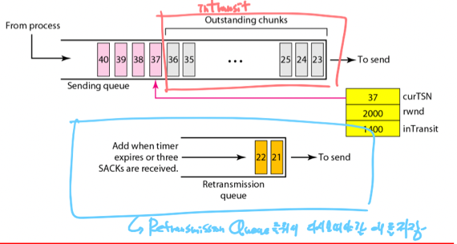
- 이건 송신측인데
- 그냥 Timeout이 난 애들을 Retransmission Queue에 넣어서 보내게 된다는 점정도 기억해라
- Congestion Control은 TCP에서와 동일하다네